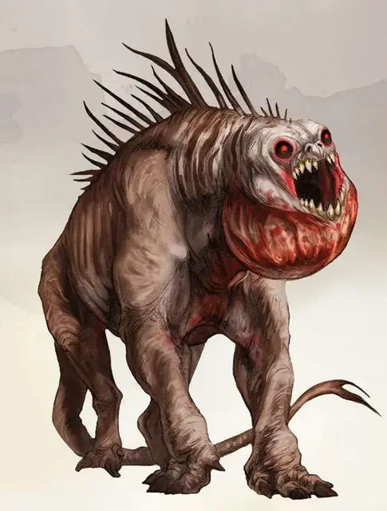

Ревун
Howler
Большое Исчадие, обычно хаотично-злое

Класс Доспеха 16 (природный доспех)
Хиты 90 (12к10 + 24)
Скорость 40 футов
| мод | спас | ||
|---|---|---|---|
| СИЛ | 17 | +3 | +3 |
| ЛОВ | 16 | +3 | +3 |
| ТЕЛ | 15 | +2 | +2 |
| мод | спас | ||
|---|---|---|---|
| ИНТ | 5 | −3 | −3 |
| МДР | 14 | +2 | +2 |
| ХАР | 6 | −2 | −2 |
Навыки Восприятие +5
Сопротивление урону огонь, холод, электричество; дробящий, колющий, рубящий от немагических атак
Иммунитет к состояниям испуг
Чувства тёмное зрение 60 футов, пассивное Восприятие 15
Языки Бездны
Опасность 8 (3900 опыта)
Бонус мастерства +3
Среда обитания Луг, Подземье, Пустыня, Холмы
Особенности
Языки. понимает Бездны, но не говорит.
Тактика стаи. Ревун совершает с преимуществом броски атаки по существу, если рядом с ним в пределах 5 футов находится по крайней мере одно из союзных существ, что не выведено из строя.
Действия
Мультиатака. Ревун совершает две атаки Раздирающим укусом.
Раздирающий укус. Рукопашная атака оружием: +6 к попаданию, дистанция 5 фт., одна цель. Попадание: 10 (2к6 + 3) колющего урона, плюс 22 (4к10) урона психической энергией, если цель испуганна. Эта атака игнорирует сопротивление к урону.
Душераздирающий вой (перезарядка 4-6). Ревун начинает неустанно выть в 60-футовом конусе. Каждое существо в области способное должно преуспеть в спасброске Мудрости Сл 13, иначе получит 16 (3к10) урона психической энергией и станет испуганным до конца следующего хода ревуна. Пока цель испуганна подобным образом, её скорость снижается на половину и она становится недееспособной. Цель, преуспевшая в спасброске, становится невосприимчивой к Душераздирающему вою в течение следующих 24 часов.
Описание
“Почему ревун воет? Это заставляет его добычу убегать, и, несомненно, скрытность позволила бы лучше охотиться в завывающем Пандемониуме. Есть только один ответ: существо может чувствовать страх".
— Морденкайнен
Отдалённый вой предвещает появление ревуна. Услышав его вдалеке разум съёживается и наполняется ужасом от осознания того, что шум приближается. Когда ревуны выходят на охоту, недостаточно иметь мужество, чтобы противостоять им.
Эти кошмарные создания, родом из Пандемониума, могут также быть найдены в Низших Планах, поскольку многие исчадия ловят их и дрессируют боевыми гончими.
Ревунов можно, некоторым образом, приручить, но они реагируют только на грубые тренировки, где их заставляют признать дрессировщика как неоспоримого лидера стаи. Надрессированная стая затем без колебаний следует приказам своего лидера. Стаи ревунов курсируют по полям сражений Кровавой войны, а также служат злым смертным, достаточно могущественным и злобным, чтобы завоевать их преданность.
Ревуны полагаются на свою скорость, количество и свой, притупляющий разум, вой, чтобы загнать в угол свою жертву перед тем, как разорвать её на части. Вой притупляет разум жертв, из-за чего, им становится тяжелее обдумывать сложные мысли. Они не способны ни на что иное, кроме как скитания в страхе по полю боя в надежде найти укромное место. Благодаря этому, исчадия особенно поощряют ревунов, поскольку в самые ключевые моменты сражения, их вой может нейтрализовать врагов.